The Problem
This is a personal portfolio project, not client work. I wanted one project that exercises a full Hadoop-era streaming stack (Flume, Kafka, Spark Structured Streaming, HDFS, a time-series store and a live dashboard) on real data that changes every few seconds and is easy to check by eye.
The source is the free adsb.lol ADS-B API (no key, ODbL licence). By default the poller asks for every aircraft within 250 nautical miles of Cairo; one setting switches it to the global military, LADD or PIA feeds. Each poll is capped at 300 aircraft, so input is at most about 30 events per second.
Architecture

Approach & Implementation
- Python poller: Calls adsb.lol every 10 seconds, drops aircraft with no position, flattens each one into a JSON event (the "ground" altitude string becomes an on_ground flag) and POSTs the batch to Flume
- Dual Flume Agents: HTTP source → memory channel → Kafka sink on the way in; Kafka source → file channel → HDFS sink for the archive
- Spark Structured Streaming: One job, two queries: raw positions written every 10 seconds, and per-aircraft-type counts and average speed/altitude over a 1-minute window sliding every 30 seconds
- InfluxDB Time-Series: Raw points tagged by ICAO hex, aircraft type and on-ground flag; aggregates tagged by aircraft type
- Grafana Dashboard: Six provisioned panels, including a geomap of each aircraft's latest position, counts by type, and on-ground vs airborne
- HDFS Archive: Raw JSON partitioned by date and hour for later batch work
Challenges & Solutions
Challenge: Bursty API Responses
A 250 nm radius or a global endpoint can return hundreds of aircraft in one call, which is more than a single-node Docker stack needs to handle every 10 seconds.
Solution: Cap at the Source
The poller caps each batch at 300 aircraft, and Spark runs in local[2] mode with 10-second micro-batches matched to the poll interval. The cap simply cuts the list, so the README recommends a smaller radius over relying on it.
Challenge: No Spark Sink for InfluxDB
Spark has no built-in InfluxDB writer, and the map and the trend charts need different shapes of data.
Solution: Two foreachBatch Queries
Both queries write with foreachBatch and the influxdb-client library, each with its own checkpoint. The aggregate query uses a windowed groupBy with a 1-minute watermark; there is no per-aircraft state across batches.
Outcome
The full stack (11 Docker Compose services) starts with one command and shows live aircraft over Cairo on a Grafana geomap that refreshes every 10 seconds, so positions are roughly 10 to 30 seconds old. Throughput and latency were not benchmarked; by configuration the input is capped at about 30 events per second.
Known gaps: windows use Spark processing time rather than the event's own timestamp, the ingest side (memory channel, acks=1, single broker) can drop data on a crash, and the map shows latest positions, not flight tracks. The write-up covers these and what I would change next.